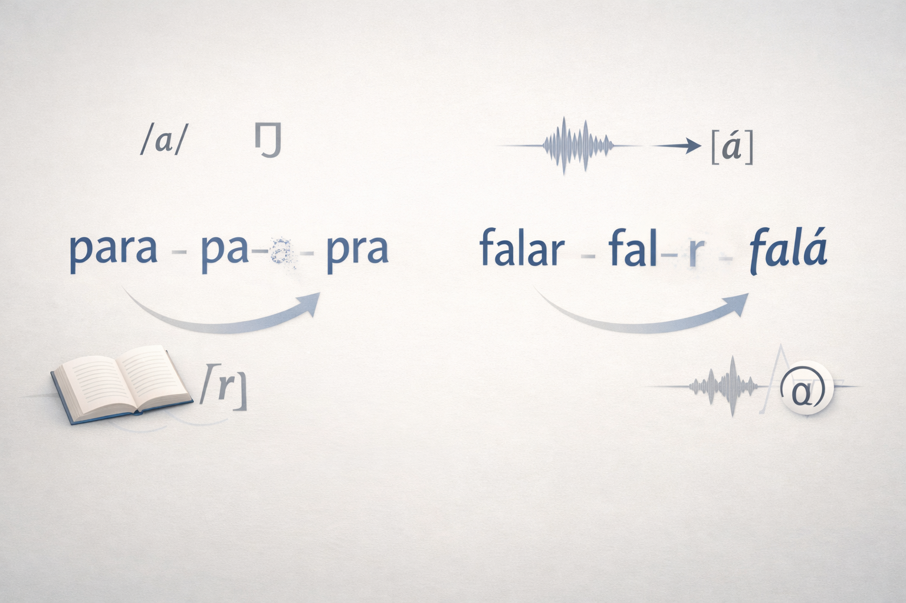

Processo de Elisão (ou Supressão) de Segmentos Fonológicos
O processo de elisão fonológica, também denominado supressão de segmentos fonológicos, consiste na não realização de determinados fonemas em contextos específicos da fala, especialmente em situações de uso espontâneo e informal da língua. Esse fenômeno evidencia a distância entre a língua escrita e a língua falada, revelando mecanismos de adaptação articulatória, prosódica e comunicativa que regem o funcionamento real das línguas naturais.
Na Língua Portuguesa, a elisão ocorre com frequência em expressões como “para” → “pra” ou na supressão do /r/ final em verbos no infinitivo, como “falar” → “falá”. Tais ocorrências não comprometem a inteligibilidade do discurso e seguem padrões sistemáticos amplamente descritos pela fonologia e pela sociolinguística.
1. Conceito Linguístico de Elisão Fonológica
Do ponto de vista da fonologia, a elisão corresponde à exclusão de um segmento sonoro — vogal ou consoante — motivada por fatores estruturais e contextuais. Trata-se de um fenômeno previsível, condicionado pela posição do fonema na sílaba, pela tonicidade e pelo ritmo da fala.
Segundo Câmara Jr. (1970), a língua falada tende a organizar-se segundo princípios de economia e fluidez articulatória, o que explica a recorrência de processos de redução sonora em contextos de alta frequência lexical.
“A língua oral manifesta uma tendência constante à simplificação articulatória, eliminando ou enfraquecendo fonemas em posições menos salientes. Esses processos não representam falhas do sistema, mas mecanismos estruturais de adaptação funcional da linguagem às condições reais de uso.”
(CÂMARA JR., 1970)
Assim, a elisão deve ser compreendida como um fenômeno inerente à dinâmica da língua, e não como desvio ou erro linguístico.
2. Elisão e Fala Casual: Economia Articulatória
A fala casual constitui o ambiente privilegiado para a ocorrência da elisão. Em situações de interação espontânea, os falantes priorizam a fluidez comunicativa, reduzindo o esforço articulatório sem prejuízo semântico.
De acordo com Bybee (2001), palavras de alta frequência tendem a sofrer maior redução fonética, pois são mais previsíveis no discurso e exigem menor carga cognitiva para o reconhecimento.
“A repetição frequente de determinadas formas linguísticas leva à sua automatização, favorecendo processos de redução fonética. A elisão surge, nesse contexto, como resultado direto da frequência de uso e da previsibilidade contextual.”
(BYBEE, 2001)
Esse princípio explica por que itens como preposições, pronomes e desinências verbais são alvos recorrentes de elisão na fala cotidiana.
3. Segmentos Fonológicos Afetados pela Elisão
3.1 Elisão vocálica
A elisão de vogais ocorre, sobretudo, em sílabas átonas e em posições de menor proeminência prosódica. No português brasileiro, é comum a supressão de vogais médias em palavras funcionais e expressões cristalizadas no uso oral.
3.2 Elisão consonantal
A supressão de consoantes em posição final de sílaba ou palavra constitui um dos processos mais produtivos da língua falada. O apagamento do /r/ final em verbos no infinitivo é amplamente documentado em estudos sociolinguísticos.
Bisol (2005) observa que esse fenômeno não compromete a distinção morfológica nem o reconhecimento lexical, sendo plenamente funcional na comunicação oral.
“A perda do /r/ em posição final de verbo no infinitivo configura-se como um processo fonológico estável da oralidade brasileira, condicionado por fatores prosódicos e sociolinguísticos, sem impacto negativo na compreensão.”
(BISOL, 2005)
4. Elisão, Variação Linguística e Fatores Sociais
A elisão também se relaciona a fatores sociais, regionais e estilísticos. Estudos variacionistas demonstram que idade, escolaridade, contexto comunicativo e grau de formalidade influenciam a realização ou supressão de segmentos fonológicos.
Labov (2008) destaca que fenômenos como a elisão não devem ser analisados como desvios individuais, mas como padrões sistemáticos compartilhados por comunidades de fala.
“A variação fonológica obedece a regras estruturais e sociais bem definidas. Processos como a elisão não são aleatórios, mas refletem escolhas linguísticas condicionadas pelo contexto e pela identidade social do falante.”
(LABOV, 2008)
Desse modo, a elisão constitui um importante indicador de variação e mudança linguística.
5. Norma-Padrão, Oralidade e Preconceito Linguístico
Apesar de sua regularidade, a elisão é frequentemente estigmatizada por não corresponder aos padrões da norma escrita. Essa visão normativa contribui para o preconceito linguístico, ao desconsiderar a legitimidade da língua falada.
Crystal (2011) argumenta que a oralidade segue regras próprias, distintas da escrita, e que processos de redução fonológica são universais nas línguas naturais.
“A fala não é uma versão imperfeita da escrita, mas um sistema autônomo, governado por princípios específicos de organização sonora, ritmo e interação social.”
(CRYSTAL, 2011)
6. Considerações Finais
O processo de elisão ou supressão de segmentos fonológicos revela a natureza dinâmica, adaptativa e funcional da Língua Portuguesa. Exemplos como “pra” e “falá” ilustram como a língua se ajusta às condições reais de uso, privilegiando a fluidez e a eficiência comunicativa.
Compreender a elisão contribui não apenas para o estudo científico da linguagem, mas também para práticas pedagógicas mais inclusivas e para o combate ao preconceito linguístico, valorizando a diversidade das formas de expressão oral.
Referências
BISOL, L. Introdução a estudos de fonologia do português brasileiro. Porto Alegre: EDIPUCRS, 2005.
BYBEE, J. Phonology and Language Use. Cambridge: Cambridge University Press, 2001.
CÂMARA JR., J. M. Estrutura da Língua Portuguesa. Petrópolis: Vozes, 1970.
CRYSTAL, D. Language and the Internet. Cambridge: Cambridge University Press, 2011.
LABOV, W. Padrões sociolinguísticos. São Paulo: Parábola Editorial, 2008.
Explore Outros Conteúdos
Continue seus estudos acessando outras seções do site Mestre Kira: